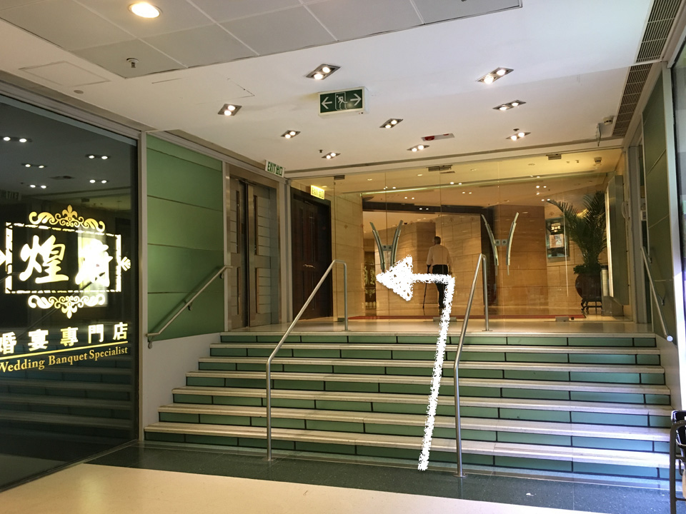

By MTR (subway)
Find your way to Hung Hom Station. Follow the sign for Exit C3. Walk across the footbridge to Fortune Metropolis. Then, follow the sign for Harbour Plaza Metropolis and take any lift to the 21st floor.
From the Cross-Harbour Tunnel
Follow the sign for Hong Kong Coliseum. Take the right and you’ll see Harbour Plaza Metropolis on your way. Take any lift to the 21st floor.
By car or by taxi
Navigate to Harbour Plaza Metropolis, Hunghom. Take any lift to the 21st floor.